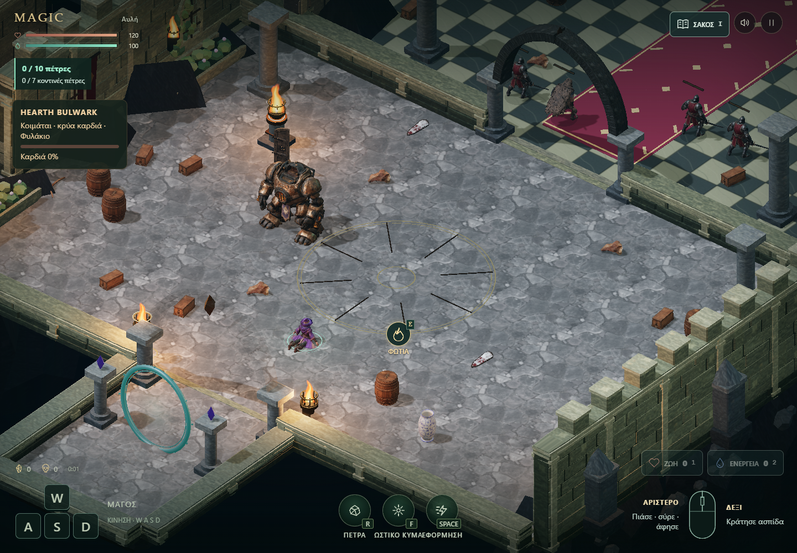
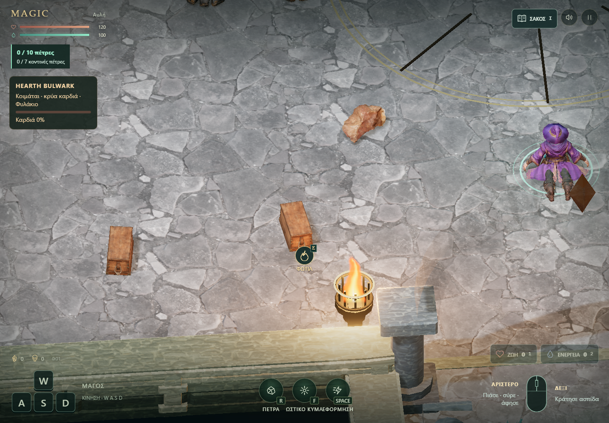
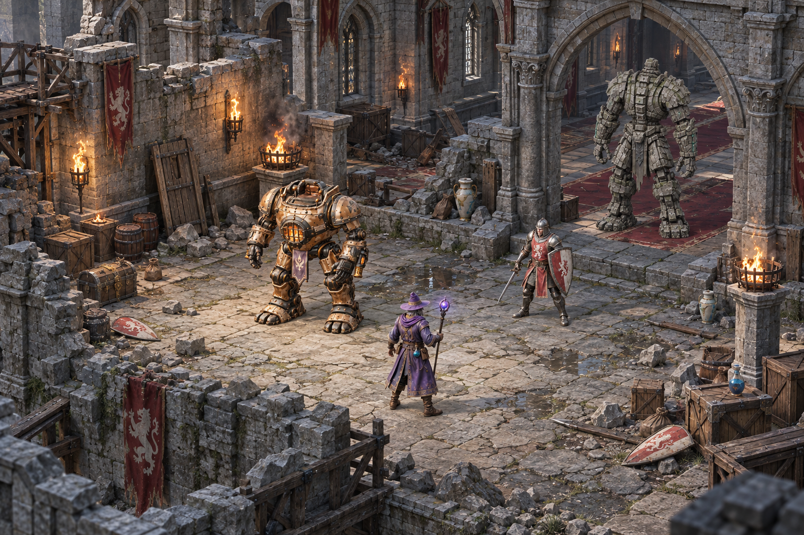

MAGIC / AFTER THE SIEGE / ΠΡΩΤΟ PLAYABLE ΔΕΙΓΜΑ
Έτοιμα assets, μέσα στο δικό μας παιχνίδι.
Το Β δοκιμάζεται με πραγματικά αντικείμενα από το Poly Haven: κουτιά, βαρέλια, ασπίδες, πόρτες, πέτρες και αγγεία. Προστέθηκαν υλικά πέτρας και κινούμενες φλόγες. Η συνολική αρχιτεκτονική μετατροπή στο concept Β παραμένει σε εξέλιξη.

Ίδια κάμερα και ανάλυση 1440×1000. Το HEARTH και ο Mage τοποθετήθηκαν στις ίδιες θέσεις για σύγκριση. Οι στάσεις χαρακτήρων μπορεί να διαφέρουν. Τα στιγμιότυπα προέρχονται από το παιχνίδι.
Τι αντικαταστάθηκε
Ξύλινο κουτίΠραγματικές σανίδες, σύνδεσμοι και σχοινί. Κρατά τις αναλογίες του αρχικού asset.
ΑσπίδαΦθαρμένη βαφή, μεταλλικό τελείωμα και πίσω μέρη. Στο έδαφος τοποθετείται ξαπλωμένη.
Πόρτα κάστρουΤο αποσπασμένο φύλλο χρησιμοποιείται ως υπάρχον αντικείμενο αρπαγής/ρίψης. Το αρχείο πηγής κρατά χωριστά φύλλα και πλαίσιο.
ΠέτρωμαΠρωτότυπο 53.520 τρίγωνα, έκδοση παιχνιδιού 4.014 με normal map. Και οι δύο εκδόσεις διατηρούνται.
Οι πηγές διατίθενται με CC0. Κρατήθηκαν τα πρωτότυπα Blender, τα glTF, οι υφές και hashes. Το σεντούκι κατέβηκε ως υποψήφιο και δεν έχει ενσωματωθεί.
Κοντινή όψη αντικειμένων

Ο προηγούμενος στόχος Β

Απομένουν η πληρέστερη αρχιτεκτονική μορφή, τα παράθυρα, τα εμβλήματα, η διάταξη ερειπίων και τα μικρά items. Το σημερινό δείγμα ελέγχει τη βάση υλικών και έτοιμων props.
Τι ελέγχθηκε
191 unit tests, η υπάρχουσα δοκιμή physics integration, 14 browser checks και κίνηση με το προβλεπόμενο game client. Επαληθεύτηκαν αρπαγή/ρίψη και προσγείωση και των έξι τύπων, ανάφλεξη ξύλου, σβήσιμο/άναμμα φλόγας, pause και touch viewport 390×844.
| Desktop 1440×1000 / RTX 5080 | Πριν | Δείγμα Β |
|---|
| Χρόνος καρέ p95 | 18,6 ms | 18,6 ms |
| Draw calls / πλήρες καρέ | 565 | 524 |
| Τρίγωνα / πλήρες καρέ | 784.076 | 1.157.007 |
180 δείγματα ανά εκδοχή, σταθερή κάμερα, μετά το ζέσταμα των shaders. Η μέτρηση περιλαμβάνει τα ήδη υπάρχοντα μοντέλα και rendering passes. Η απόδοση πραγματικού κινητού δεν έχει επαληθευτεί.
Δημόσιο δοκιμαστικό preview με χωριστή αποθήκευση. Η πρώτη φόρτωση περιλαμβάνει μεγάλα μοντέλα και μπορεί να αργήσει. Η κύρια έκδοση και το ενεργό task των μοντέλων δεν αντικαταστάθηκαν. Δεν έγινε νέα παραγωγή Meshy ή αγορά asset. Χρήση Codex/credits ανά task: μη διαθέσιμη.